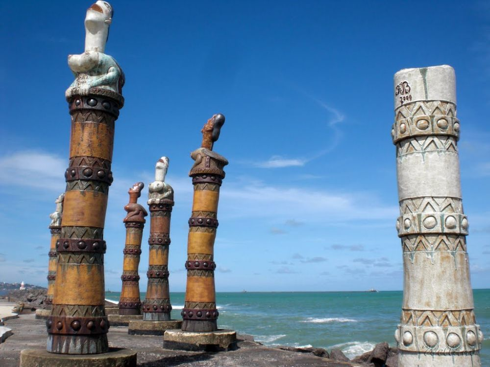

Pontos turísticos de Recife
Parque das esculturas Brennand
Em frente à Praça do Arsenal da Marinha, um espaço que já ganhou o coração dos pernambucanos e dos turistas é o Paço do Frevo, centro de referência e salvaguarda da cultura do frevo, um espaço de encontro, convívio e descoberta. Inaugurado após a declaração do frevo como Patrimônio Cultural Imaterial da Humanidade pela Unesco, o Paço oferece ao visitante a oportunidade de experimentar a história desta expressão cultural, visitando exposições fotográficas, conferindo projeções visuais, reverenciando o acervo de estandartes e flabelos de agremiações tradicionais, entre diversas outras possibilidades. Parte do complexo turístico das cidades de Recife e Olinda, o prédio possui quatro pavimentos em 1.733m2, distribuídos em quatro espaços de exposição, um Centro de Documentação e Pesquisa, uma Escola de Música, uma Escola de Dança, além de um estúdio de gravação e uma sala de web-rádio.